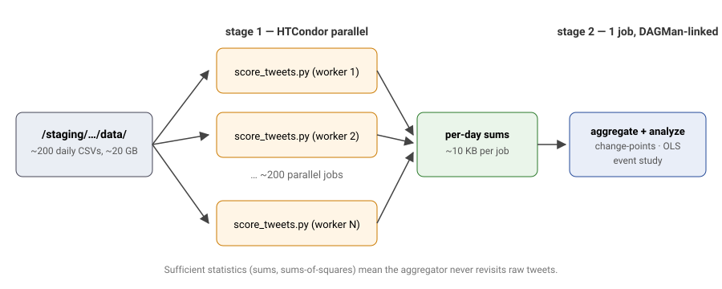
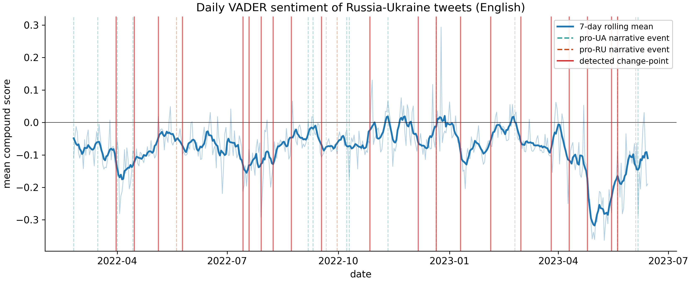
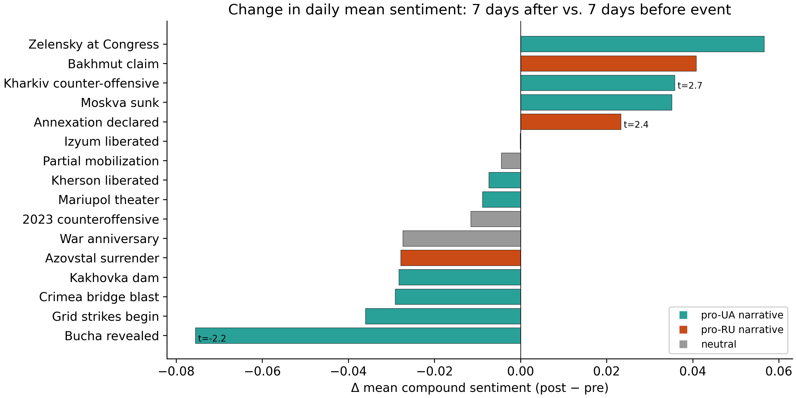
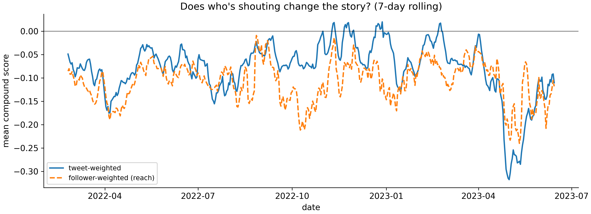

VADER sentiment vs. Russia-Ukraine war events at CHTC scale
Nils Matteson, Pravin Schmidley, Will Tappa
STAT 405 / DSCP, April 2026
When a major Russia-Ukraine war event hits the wire, does the sentiment of public tweets shift, and for how long?
We score ~52 GB of tweets (70.9M tweets, 476 days) with VADER on the CHTC cluster, then run event-study regressions and change-point detection against a curated timeline of 21 major war events.
bwandowando/ukraine-russian-crisis-twitter-dataset-1-2-m-rowstext, tweetcreatedts,
language, retweetcount,
followers
/staging/staging; learn stays clean.VADER compound score per tweet (-1 = very negative, +1 = very positive)
Each file produces per-(date, language) sums:
sum(compound), sum(compound^2),
sum(followers*compound), counts. These let the aggregator
compute daily means, variances, and reach-weighting without re-reading
the raw tweets.
Three analyses on the daily time series:
mean_compound ~ t + log(n_tweets) + event dummies.
Blue = 7-day rolling mean (English); dashed = annotated events; red = PELT change-points. Daily mean drifts between -0.05 and -0.15; shorter dip at Bucha (Apr 2022), deepest excursion during Bakhmut period (spring 2023).

3 of 16 events pass |t| > 2: Kharkiv counter-offensive (+0.036, t=2.65), Annexation declared (+0.023, t=2.41), Bucha revealed (-0.076, t=-2.25).
OLS (n=476): R^2 = 0.092, adj = 0.054, F = 2.44, p = 0.0007. Coefficients with |t| > 2:
| Event | beta | p |
|---|---|---|
| Kherson liberated | +0.119 | 0.006 |
| Kakhovka dam | -0.108 | 0.019 |
| War anniversary | +0.092 | 0.036 |
| Zelensky at Congress | +0.089 | 0.040 |
PELT finds 21 structural breaks; only 2022-12-21 (Zelensky at Congress) aligns with a labeled event.

Follower-weighting shifts amplitude, not sign: loudest accounts mirror the median tweeter.
Found: events explain ~9% of daily variance. Kherson + Kakhovka register with the expected sign in the regression; Bucha is the clearest single-event dip. Most change-points don’t match our event list.
Caveats: VADER is English-only (non-English looks muted); Durbin-Watson 0.70 means strong autocorrelation (OLS SEs understated); events cluster, so dummies are not clean causal effects; no bot filter.
Next: multilingual sentiment (XLM-R), bot filter, RDD around each event.
git clone https://github.com/matteso1/STAT405project.git